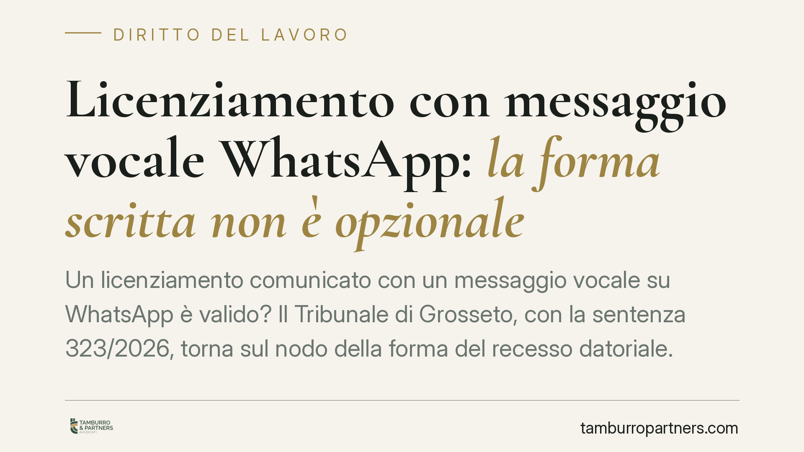

Licenziamento con messaggio vocale WhatsApp: la forma scritta non è opzionale
Un licenziamento comunicato con un messaggio vocale su WhatsApp è valido? Il Tribunale di Grosseto, con la sentenza 323/2026, torna sul nodo della forma del recesso datoriale. La questione non è teorica: dalla risposta dipende la sorte del rapporto di lavoro e le tutele spettanti al lavoratore. Analizziamo cosa prevede la legge e quali conseguenze pratiche discendono da una comunicazione informale.

Il caso
Un datore di lavoro comunica il licenziamento al dipendente inviando un messaggio vocale tramite WhatsApp. Nessuna lettera, nessun testo scritto: solo l'audio. Il lavoratore impugna l'atto, contestando anzitutto il difetto di forma. Il Tribunale di Grosseto, con la sentenza n. 323/2026, affronta il punto centrale: la registrazione vocale integra o meno la forma richiesta dalla legge per il recesso datoriale.
La vicenda è emblematica di una tendenza crescente. La messaggistica istantanea ha assorbito buona parte delle comunicazioni tra le parti del rapporto di lavoro, comprese quelle che il legislatore circonda di garanzie formali. Il rischio è confondere la rapidità del mezzo con la sua idoneità giuridica.
Inquadramento normativo
Il riferimento è l'art. 2 della Legge 15 luglio 1966, n. 604. La norma stabilisce che il licenziamento deve essere comunicato per iscritto e deve contenere la specificazione dei motivi. Si tratta di una forma richiesta a pena di validità (forma *ad substantiam*): non è un semplice adempimento procedurale, ma un elemento senza il quale l'atto è privo di effetti.
La ratio è duplice. Da un lato, la forma scritta garantisce al lavoratore la certezza del contenuto e della data del recesso, dati indispensabili per organizzare l'eventuale impugnazione entro i termini di decadenza. Dall'altro, obbliga il datore a una manifestazione di volontà chiara e cristallizzata, non equivoca né modificabile a posteriori.
Il problema del messaggio vocale sta proprio qui. Un audio contiene parole, ma non è un documento scritto. La giurisprudenza ha ammesso, nel tempo, forme di comunicazione digitale purché riconducibili alla scrittura: e-mail, PEC, messaggi di testo idonei a documentare in modo stabile e leggibile il contenuto e la provenienza. Il file audio, invece, non soddisfa il requisito della forma scritta perché veicola la volontà attraverso il suono, non attraverso segni grafici.
Le implicazioni pratiche
Quando il licenziamento è comunicato in una forma non conforme all'art. 2 della L. 604/1966, la conseguenza è la nullità del recesso per difetto di forma. Ciò comporta, nella maggior parte dei casi, il diritto del lavoratore alla reintegrazione nel posto di lavoro e al risarcimento del danno, secondo il regime di tutela applicabile in ragione della data di assunzione e delle dimensioni dell'impresa.
Per il datore di lavoro, l'errore è tutt'altro che marginale. Un licenziamento sostanzialmente fondato — magari sorretto da giusta causa o giustificato motivo — può essere travolto per un vizio meramente formale. La solidità delle ragioni non sana l'assenza della forma richiesta.
Per il lavoratore, all'opposto, la comunicazione informale apre un margine difensivo significativo. Un audio inviato via WhatsApp, oltre a porre il problema della forma, solleva questioni di prova sulla data certa e sulla riferibilità del messaggio a chi ha realmente il potere di recedere.
Attenzione, però, ai termini. Anche di fronte a un licenziamento viziato, il lavoratore resta soggetto al termine di decadenza per l'impugnazione, che decorre dal ricevimento della comunicazione. L'informalità del mezzo non congela le scadenze processuali.
Cosa fare in concreto
- Datori di lavoro: comunicate ogni licenziamento con lettera scritta consegnata a mano con firma per ricevuta, oppure tramite raccomandata A/R o PEC. Escludete audio, messaggi vocali e telefonate come veicolo del recesso.
- Datori di lavoro: inserite sempre nella comunicazione la specificazione dei motivi, come richiesto dall'art. 2 della L. 604/1966, evitando formule generiche.
- Lavoratori: se ricevete una comunicazione di licenziamento in forma orale o vocale, conservate integralmente il file e i dati di ricezione, senza cancellare la conversazione.
- Lavoratori: rivolgetevi tempestivamente a un professionista per valutare l'impugnazione entro i termini di decadenza, che decorrono comunque dalla ricezione.
- Entrambi: verificate chi ha effettivamente inviato la comunicazione, perché la riferibilità al titolare del potere di recesso incide sulla validità dell'atto.
Una lettura d'insieme
La pronuncia di Grosseto conferma un principio consolidato: la digitalizzazione dei rapporti non deroga alle garanzie di forma volute dal legislatore. La comodità di un vocale non basta a sostituire la certezza della scrittura. Consigliamo, in ogni gestione del recesso, di privilegiare canali che documentino contenuto, provenienza e data in modo inequivocabile.
---
*Contributo informativo a cura di Tamburro & Partners - Avv. Giuseppe Tamburro. Non costituisce parere legale.*
Ogni storia di lavoro ha i suoi tempi.
Se gestisci HR e vuoi un confronto su contenzioso, ispezioni o licenziamenti, scrivi allo studio. Ti rispondiamo entro un giorno lavorativo.